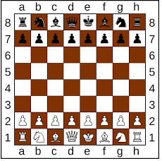

What opening chess moves are statistically more likely for a player to win a game for white and black pieces
This is what a chess board looks like


This is a visualization for how often an opening move is for white pieces


This is a visualization for how often an opening move is for black pieces responing to Whites first move